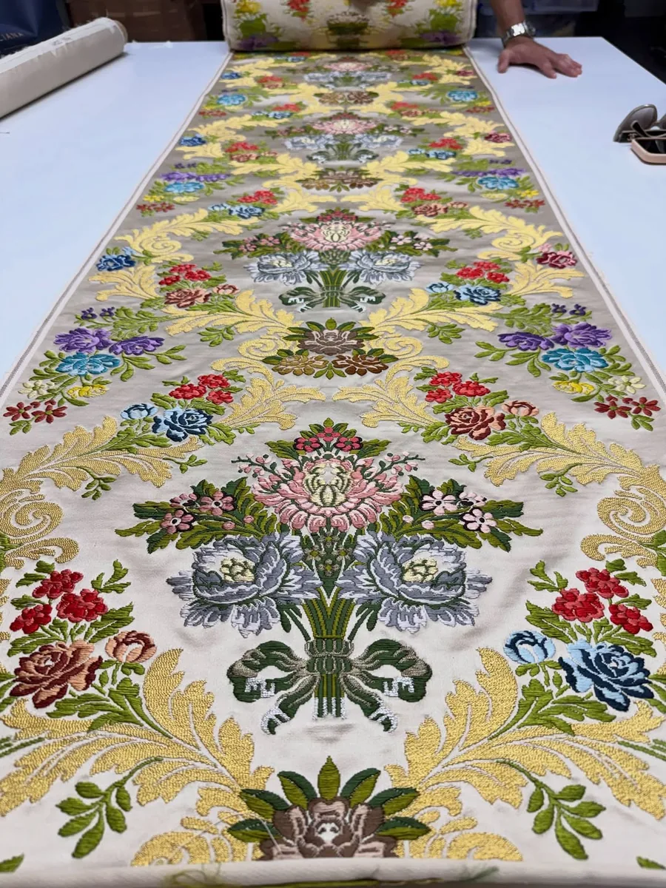

Tienda Centro
C/ Burriana, 21
46005 Valencia
✦ Trajes de fallera a medida
El espolín es una seda tejida a mano, con una lanzadera para cada color. En nuestro taller la convertimos en tu traje de fallera: la cortamos y la cosemos a tu medida, y te lo probamos en la tienda.
Foto: @jose_espolin_estudio
▾✦ Qué es el espolín
Es una seda estrecha, de unos 54 cm de ancho, tejida en telar Jacquard sin motor. El tejedor pasa a mano lanzaderas pequeñas, una por color, solo donde va el dibujo.
Cada hilo se remata al acabar su pasada. Por eso, si le das la vuelta a la tela, el revés enseña el mismo dibujo, con los hilos cortados y rematados. La tela hecha a máquina queda lisa por detrás.
El espolín es una forma de brocado: lleva una trama añadida, a menudo de oro o plata, que parece bordada pero está tejida.

✦ Modelos
Cada dibujo de espolín tiene nombre propio. Bajo cada foto, el dibujo y su color o un detalle del traje. Toca una foto para verla en grande.
✦ Del telar a Cosas Cucas
El traje de proclamación de Meri, Fallera Mayor 2027 de la falla Mossén Josep Cuenca-Pinedo, empezó en un telar en junio de 2024. Es un espolín «Tetuán» en color champán, tejido a mano por la Compañía Valenciana de la Seda en Beniparrell.
Meri eligió el dibujo el 17 de junio de 2024. Un mes después pasó una tarde entera probando colores, madeja a madeja. En diciembre de 2025 vio la muestra y aún pidió cambiar algunas florecillas.
La Compañía, con tradición familiar desde 1770, es uno de los pocos talleres valencianos que siguen tejiendo espolín a mano, en telares de madera. El «Tetuán» de Meri ya estaba en marcha el día de la dana, que afectó a sus instalaciones, y salió adelante.
El 20 de abril de 2026 Meri vio su tela terminada y el 2 de julio la trajo a Cosas Cucas. Con el espolín cortamos y cosimos en el taller la falda y el corpiño con mangas cortas de farol, y todas las pruebas se hicieron en la tienda de la calle Burriana.
Lee la historia completa →✦ Preguntas frecuentes
Se teje a 54 cm de ancho. Como referencia, para el traje completo de la Fallera Mayor de València se encargan 13,50 m (12,50 m para la infantil), más 3,50 m de seda lisa para el corpiño de manga larga. Pero no hay una cifra fija: depende de la talla y del vuelo.
Porque la tela se teje a mano. Un espolín encarece mucho el traje, según el dibujo, los metales y el tipo de hilo. Te hacemos el presupuesto sin compromiso.
Mucho: en la fábrica Garín, por ejemplo, avanza unos 3 cm por hora, y tejer la tela de un traje puede llevar hasta tres meses de trabajo. Por eso conviene encargarlo con tiempo.
En el damasco el dibujo sale del propio tejido: es plano y se ve por las dos caras. El espolín, en cambio, es un tipo de brocado, como contamos arriba. El brocatel es una seda con el dibujo en relieve, y el lampás, una seda labrada con tramas que flotan sobre el fondo.
La seda natural sale del gusano de seda. El rayón, o viscosa, es una fibra artificial de celulosa que nació en 1884 como «seda artificial». La falda puede ser de una o de otra, y muchos dibujos se tejen en espolín, en seda estrecha o en rayón.
Sí. Meri, por ejemplo, nos trajo su «Tetuán» de la Compañía Valenciana de la Seda y en el taller lo convertimos en su traje. Al encargarlo se deja claro quién pone la tela y qué piezas entran.
✦ También hacemos
✦ Ven a vernos
Te atendemos en cualquiera de nuestras dos tiendas, con cita previa.
C/ Burriana, 21
46005 Valencia
C/ Vicent Gallart, 49
46011 Valencia
Escríbenos y te damos cita.
Consulta el horario de cada tienda en la web principal.
Ver horario →